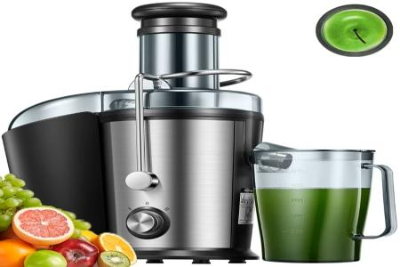
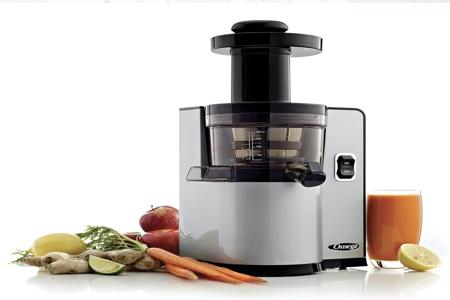

.png)
Our Juicer Collection
Explore our top-quality juicers, designed to bring freshness and health to your kitchen. Choose from our categories below:
Centrifugal Juicers
Centrifugal juicers are perfect for those who want quick and efficient juice extraction. Ideal for fruits and vegetables.

Quick Juice Pro
Price: $99.99
Perfect for quick and efficient juice extraction, this juicer is ideal for both fruits and vegetables.
Fresh Flow 200
Price: $129.99
A powerful juicer designed to retain more nutrients and provide smooth, delicious juices every time.
Speed Extractor
Price: $149.99
High-speed juicing technology for those who need their juice fast and fresh!
Masticating Juicers
Masticating juicers use a slow and steady process to retain nutrients and produce high-quality juice with minimal foam.

Health Squeeze
Price: $189.99
The Health Squeeze masticating juicer is designed to deliver the highest quality juice with minimal foam, preserving the natural flavor and nutrients of your ingredients.
Nutrient Max
Price: $229.99
The Nutrient Max is built for efficiency and quality.
Power Press Elite
Price: $259.99
The Power Press Elite is a top-of-the-line masticating juicer, designed for those who want professional-grade juice with minimal effort.
Cold Press Juicers
Cold press juicers deliver premium juice quality by preserving nutrients and natural flavors through gentle extraction.

Pure Extract XL
Price: $299.99
The Pure Extract XL is a premium cold press juicer designed to deliver the freshest, most nutrient-dense juice.
Vital Juice Master
Price: $349.99
The Vital Juice Master is the ideal juicer for anyone looking to improve their overall health and wellness.
Eco Fresh Press
Price: $399.99
The Eco Fresh Press cold press juicer combines sustainability with high-performance juice extraction.